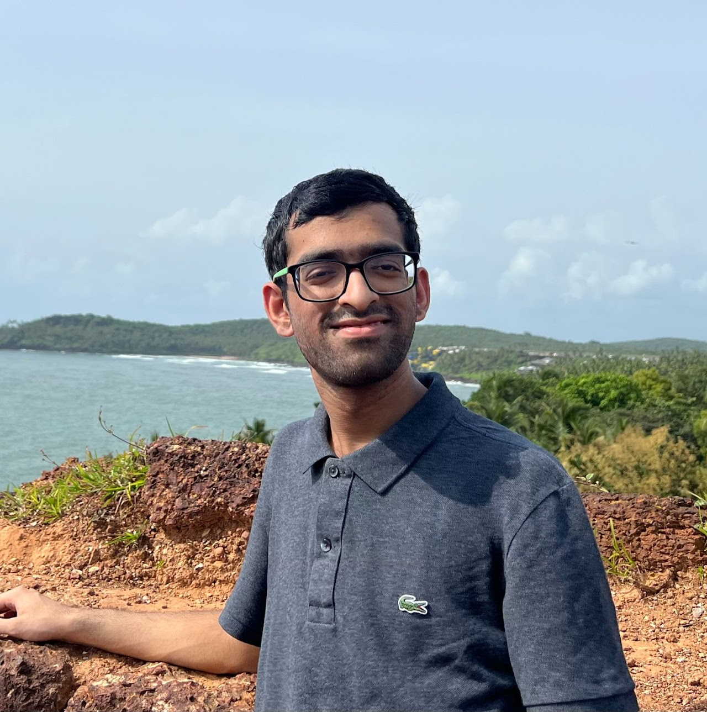

Harshvardhan Mestha
I am an undergraduate student at BITS Pilani, Goa Campus where I’m pursuing Bachelor of Engineering in Electronics and Instrumentation with a Minor in Data Science.
I am also a member of SAiDL, Society for Artificial Intelligence and Deep Learning at BITS Goa; we try to inculcate a spirit of AI and DL in the university through open source projects and personalised courses.
I also love all things related to sci-fi,space,cars,aviation. I also draw and you can find some of my art here.
I am also a member of SAiDL, Society for Artificial Intelligence and Deep Learning at BITS Goa; we try to inculcate a spirit of AI and DL in the university through open source projects and personalised courses.
I also love all things related to sci-fi,space,cars,aviation. I also draw and you can find some of my art here.
news
24th June 2024
My paper with APPCAIR is under review at the 27th International Conference on Discovery Science !
5th June 2024
My paper is under review at ReScience C 2024 !
1st May 2024
Will be working at NeosAlpha Technologies as an intern for summer 2024.
30th April 2024
Selected for Neuromatch Summer School'24 in the Deep Learning Track.
26th March 2024
Working at FOG Technologies as a Computer Vision intern.
14th December 2023
Working at APPCAIR as a student researcher !
1st October 2023
Only person from our batch to get inducted into SAiDL !
projects

CountCLIP - [Re] Teaching CLIP to Count to Ten
I conducted a reproducibility study of the paper Teaching CLIP to Count to Ten, published by Google Research, in ICCV 2023.
I implemented the paper from scratch and collected a specialized dataset to facilitate the training.
In addition to this, I carried out further explorations and analysis of the paper, and wrote a paper on my findings which is currently under review at TMLR 2024.

Visualising Image Generation using Stable Diffusion
I implemented the Stable Diffusion paper from scratch (with the help of this tutorial),
and added the functionality to animate the image generation process. More animated generations can be found here.
[repo]